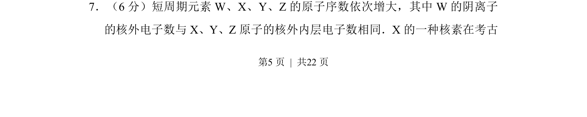
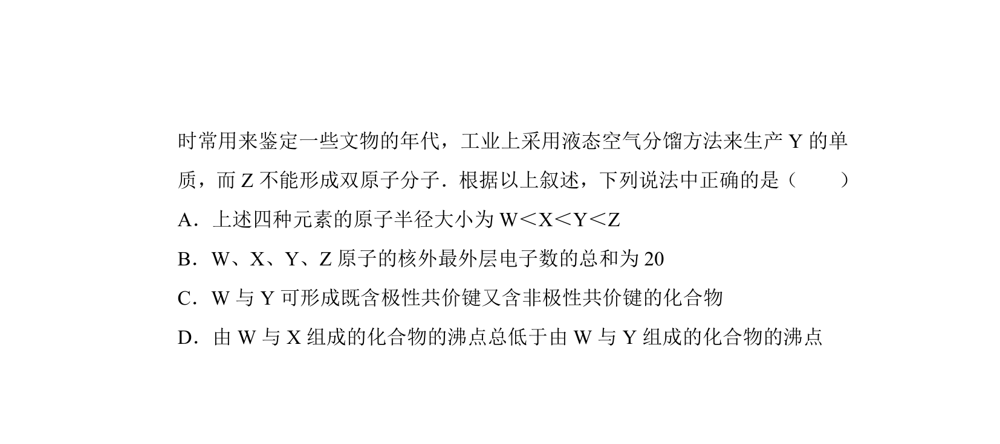
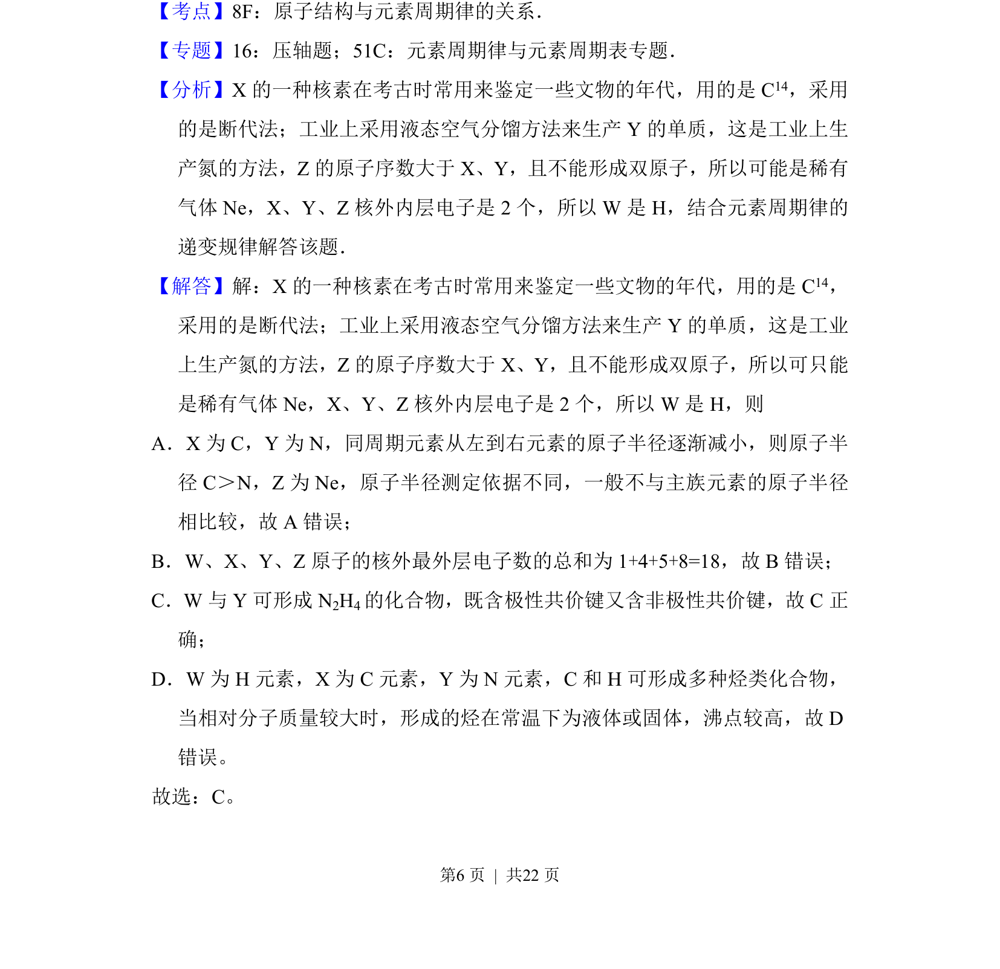
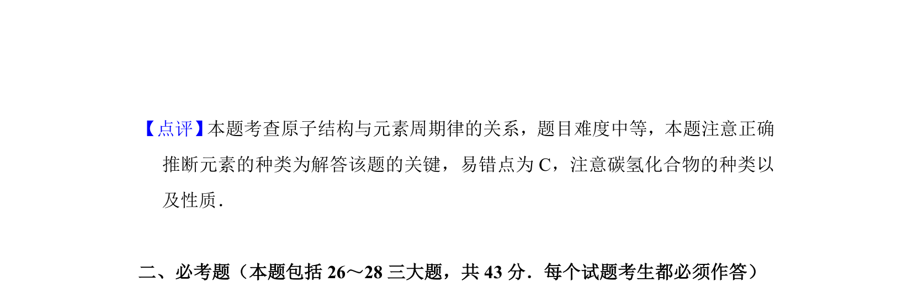

2012-新课标-07
吉林2012卷新课标不分题7题型选择难中
考点：核外电子排布 同位素 原子序数
题面


摘要
短周期元素原子结构与考古断代同位素推断
关联考点
答案与解析


📄 原 PDF 第 5 页：素材/真题/吉林/2008-2024·（吉林）化学高考真题/2012年高考化学试卷（新课标）（解析卷）.pdf
题干文本
7．（6分）短周期元素W、X、Y、Z的原子序数依次增大，其中W的阴离子
的核外电子数与X、Y、Z原子的核外内层电子数相同．X的一种核素在考古
解析文本